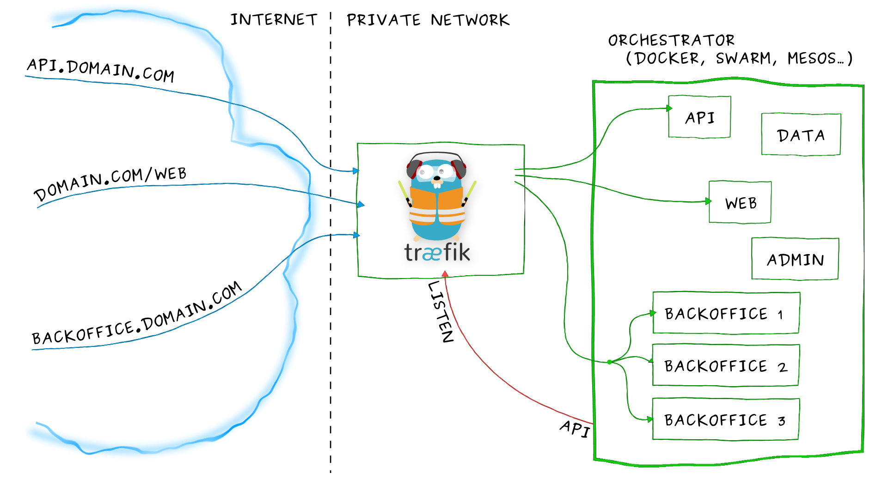

Træfɪk is a modern HTTP reverse proxy and load balancer made to deploy microservices with ease. It supports several backends (Docker, Swarm, Mesos/Marathon, Consul, Etcd, Zookeeper, BoltDB, Amazon ECS, Rest API, file...) to manage its configuration automatically and dynamically.
Overview
Imagine that you have deployed a bunch of microservices on your infrastructure. You probably used a service registry (like etcd or consul) and/or an orchestrator (swarm, Mesos/Marathon) to manage all these services. If you want your users to access some of your microservices from the Internet, you will have to use a reverse proxy and configure it using virtual hosts or prefix paths:
- domain
api.domain.comwill point the microserviceapiin your private network - path
domain.com/webwill point the microservicewebin your private network - domain
backoffice.domain.comwill point the microservicesbackofficein your private network, load-balancing between your multiple instances
But a microservices architecture is dynamic... Services are added, removed, killed or upgraded often, eventually several times a day.
Traditional reverse-proxies are not natively dynamic. You can't change their configuration and hot-reload easily.
Here enters Træfɪk.

Træfɪk can listen to your service registry/orchestrator API, and knows each time a microservice is added, removed, killed or upgraded, and can generate its configuration automatically. Routes to your services will be created instantly.
Run it and forget it!
Quickstart
You can have a quick look at Træfɪk in this Katacoda tutorial that shows how to load balance requests between multiple Docker containers.
Here is a talk given by Ed Robinson at the ContainerCamp UK conference. You will learn fundamental Træfɪk features and see some demos with Kubernetes.

Here is a talk (in French) given by Emile Vauge at the Devoxx France 2016 conference. You will learn fundamental Træfɪk features and see some demos with Docker, Mesos/Marathon and Let's Encrypt.

Get it
Binary
You can grab the latest binary from the releases page and just run it with the sample configuration file:
./traefik -c traefik.toml
Docker
Using the tiny Docker image:
docker run -d -p 8080:8080 -p 80:80 -v $PWD/traefik.toml:/etc/traefik/traefik.toml traefik
Test it
You can test Træfɪk easily using Docker compose, with this docker-compose.yml file in a folder named traefik:
version: '2'
services:
proxy:
image: traefik
command: --web --docker --docker.domain=docker.localhost --logLevel=DEBUG
networks:
- webgateway
ports:
- "80:80"
- "8080:8080"
volumes:
- /var/run/docker.sock:/var/run/docker.sock
- /dev/null:/traefik.toml
networks:
webgateway:
driver: bridge
Start it from within the traefik folder:
docker-compose up -d
In a browser you may open http://localhost:8080 to access Træfɪk's dashboard and observe the following magic.
Now, create a folder named test and create a docker-compose.yml in it with this content:
version: '2'
services:
whoami:
image: emilevauge/whoami
networks:
- web
labels:
- "traefik.backend=whoami"
- "traefik.frontend.rule=Host:whoami.docker.localhost"
networks:
web:
external:
name: traefik_webgateway
Then, start and scale it in the test folder:
docker-compose up -d
docker-compose scale whoami=2
Finally, test load-balancing between the two services test_whoami_1 and test_whoami_2:
$ curl -H Host:whoami.docker.localhost http://127.0.0.1
Hostname: ef194d07634a
IP: 127.0.0.1
IP: ::1
IP: 172.17.0.4
IP: fe80::42:acff:fe11:4
GET / HTTP/1.1
Host: 172.17.0.4:80
User-Agent: curl/7.35.0
Accept: */*
Accept-Encoding: gzip
X-Forwarded-For: 172.17.0.1
X-Forwarded-Host: 172.17.0.4:80
X-Forwarded-Proto: http
X-Forwarded-Server: dbb60406010d
$ curl -H Host:whoami.docker.localhost http://127.0.0.1
Hostname: 6c3c5df0c79a
IP: 127.0.0.1
IP: ::1
IP: 172.17.0.3
IP: fe80::42:acff:fe11:3
GET / HTTP/1.1
Host: 172.17.0.3:80
User-Agent: curl/7.35.0
Accept: */*
Accept-Encoding: gzip
X-Forwarded-For: 172.17.0.1
X-Forwarded-Host: 172.17.0.3:80
X-Forwarded-Proto: http
X-Forwarded-Server: dbb60406010d